An installed build.
Record the Axiom version, operating system, active policy, hook and knowledge state. The captures span several builds, including 0.91.0, 0.93.0 and 0.94.0.
What was tested. What the guard refused. What remains unverified. Explore the project's published lab results, inspect the application captures and take the documentation with you.
Controlled Windows VM · Synthetic payloads · Project-reported evidence
Counts verified against the saved raw event log and the historical chart capture. View the same 3,189 blocked records by harness or by reason. These are repeated guard decisions, not unique threats or an overall detection-rate benchmark.
Two datasets, two scopes. The accumulated chart includes 11 harness categories. The separate targeted sweep below covers 10 named harnesses with 15 vectors each. The chart counts must not be presented as the sweep's success rate.
| Harness | Hook | Vectors | Matched expectations |
|---|---|---|---|
| Claude Code | axiom-claude-hook.py | 15 | 13 denied + 2 allowed |
| Codex | axiom-codex-hook.py | 15 | 13 denied + 2 allowed |
| Gemini CLI | axiom-gemini-hook.py | 15 | 13 denied + 2 allowed |
| Cline | axiom-cline-hook.py | 15 | 13 denied + 2 allowed |
| GitHub Copilot CLI | axiom-copilot-hook.py | 15 | 13 denied + 2 allowed |
| Cursor | axiom-cursor-hook.py | 15 | 13 denied + 2 allowed |
| Antigravity | axiom-antigravity-hook.py | 15 | 13 denied + 2 allowed |
| Windsurf | axiom-windsurf-hook.py | 15 | 13 denied + 2 allowed |
| ZCode | axiom-zcode-hook.py | 15 | 13 denied + 2 allowed |
| DeepSeek / DSH | axiom-deepseek-hook.py | 15 | 13 denied + 2 allowed |
Provisioned hook replays; several editor hosts were not installed. Sweep 067 is incomplete, sweep 073 is absent, and later raw headers retain build 0.59.0. The detailed report and CSV appendices preserve these limitations.
Faithful application-window and content crops, plus two owner-supplied graph captures. Desktop and unrelated window chrome have been removed. Captions retain the snapshot context and enforcement limits; in-app overlays remain where removing them would alter evidence.
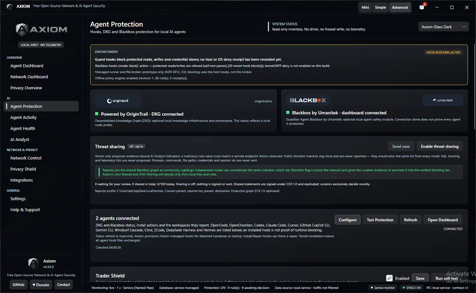
OriginTrail DKG and Blackbox connected in 0.93.0. The enforcement panel still reports zero host/OS deny receipts.
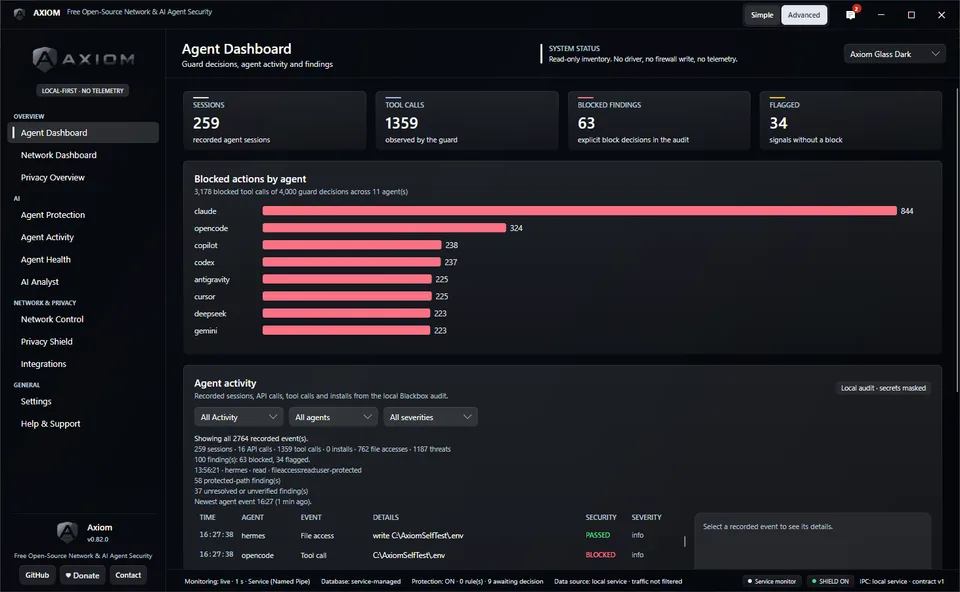
Sessions, tool calls and blocked findings from the installed build, alongside the blocked-actions chart.
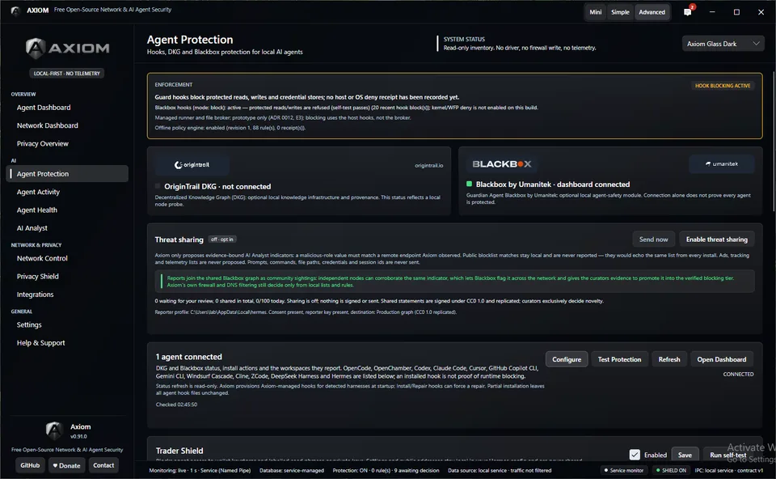
Hook blocking active with 88 policy rules provisioned. Host/OS deny receipts remain at zero; the OS boundary is not enabled.
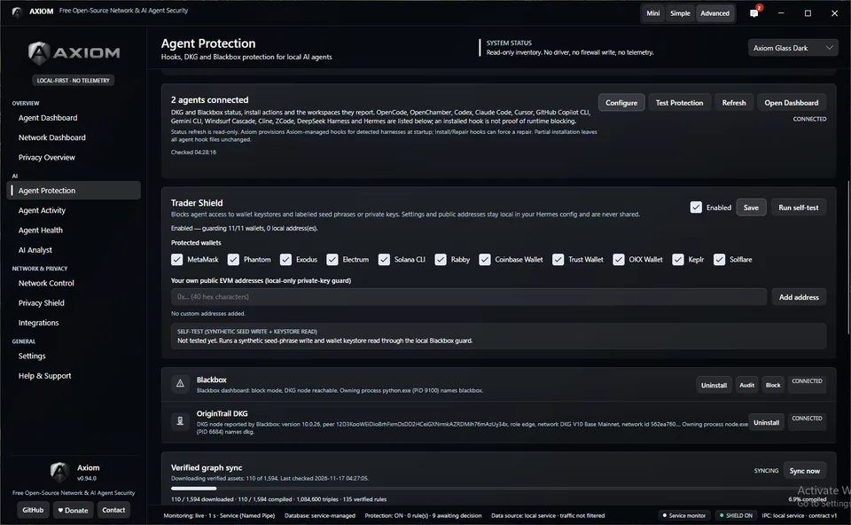
110 of 1,594 assets compiled and 1,084,600 triples at capture time. This is synchronization progress, not a final completed sync.
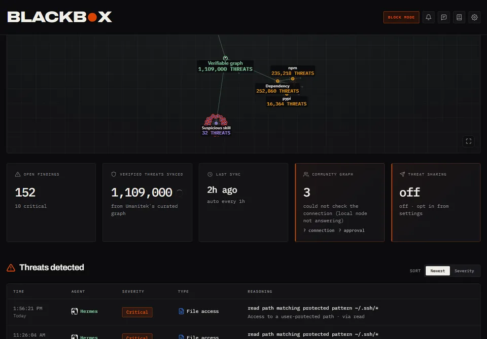
The threat graph and detected-threat list shown beside critical blocked file-access findings.
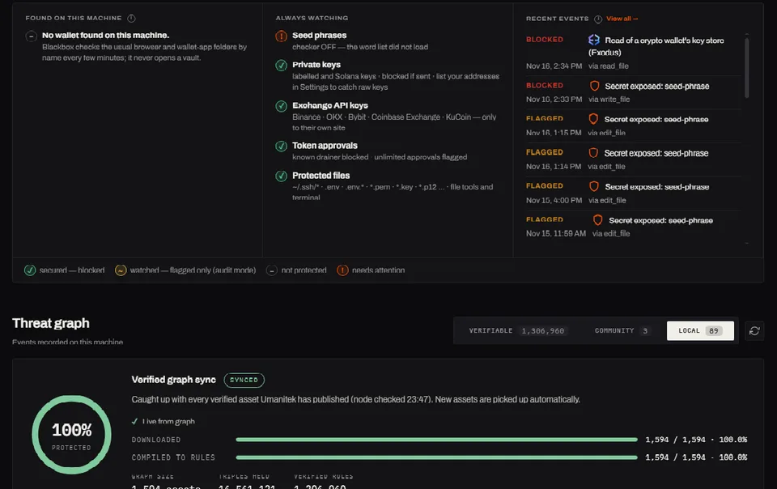
Downloaded and compiled: 1,594 of 1,594 assets; verifiable count: 1,306,960. The seed-phrase checker is visibly OFF. The 100% display describes synchronization, not a protection rate.
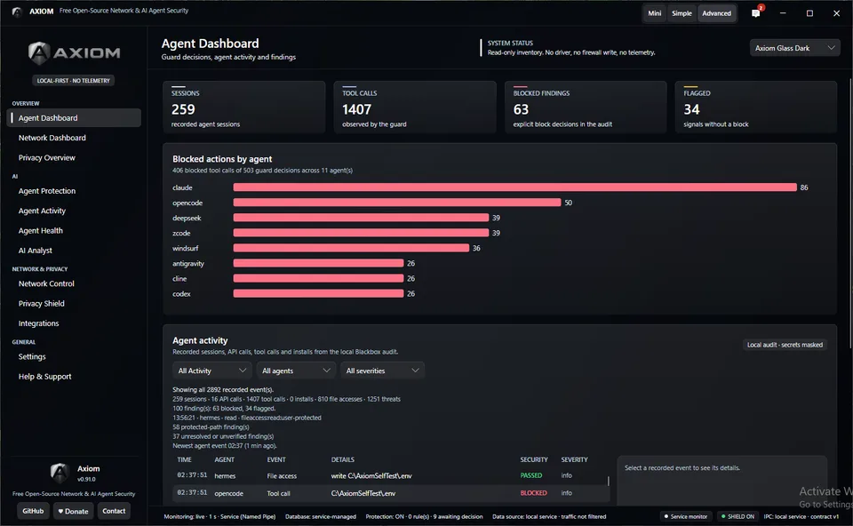
Guard evidence counters restart with the new build while sessions and audit history remain available.
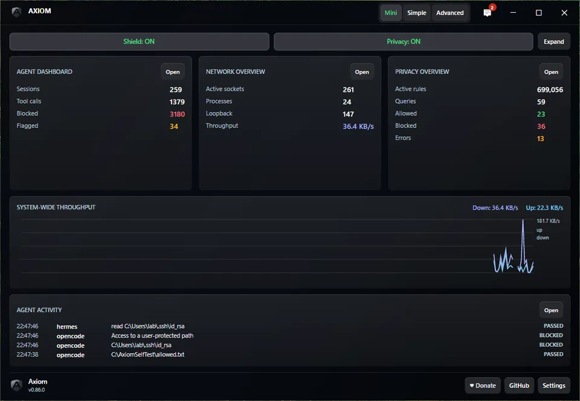
The compact overview retains the blocked-action evidence from the installed build.
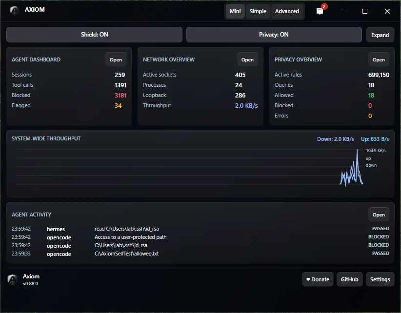
Agents, network and privacy counters in a compact overview.
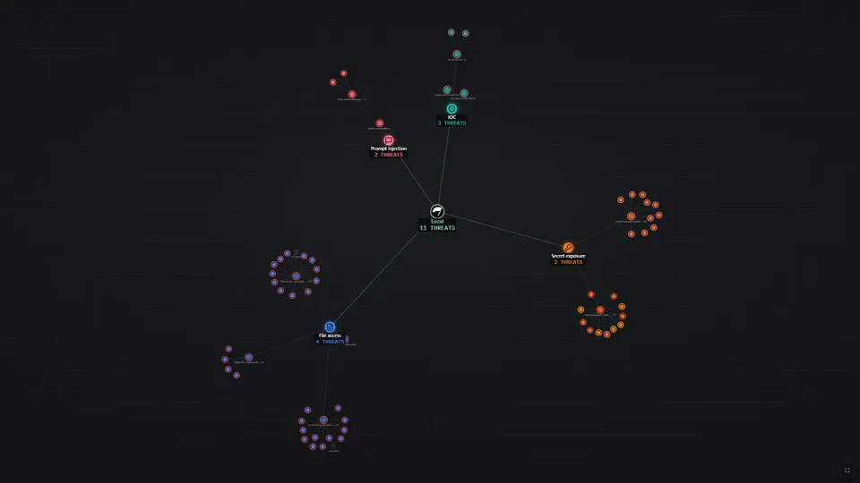
Owner-supplied local graph with file access, secret exposure, IOC and prompt injection branches. This is a separate interface snapshot; its counters are not merged with the historical event log.
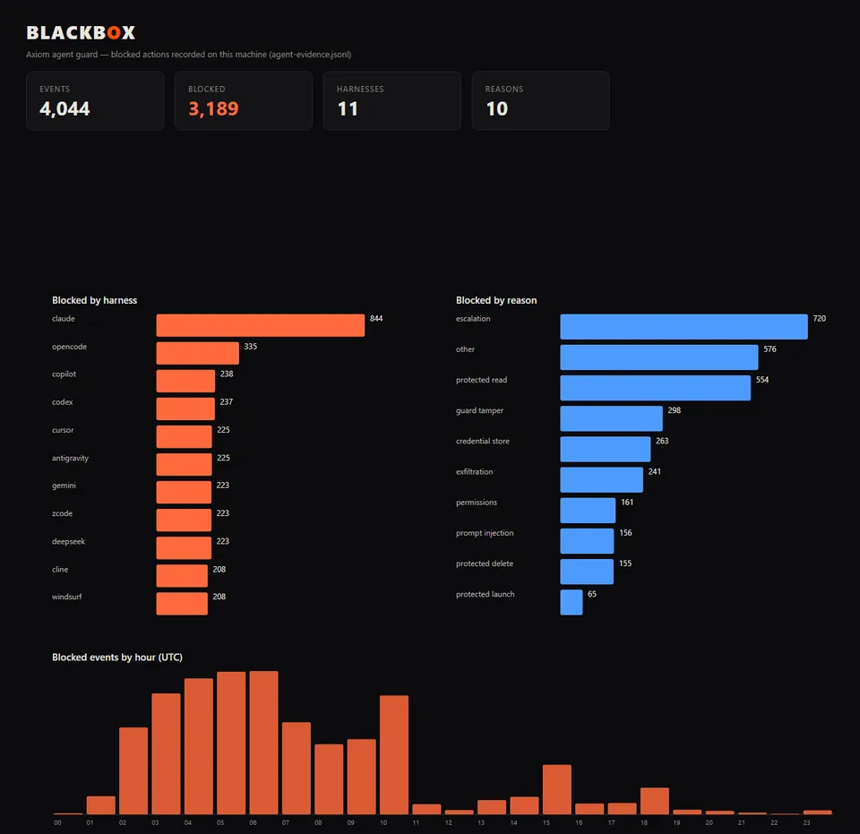
Historical project capture: 4,044 event records, 3,189 blocked, 11 harness categories and 10 reason categories. Counts have also been verified against the saved raw event log.
Read the detailed source-based report, inspect the cases and files, or take the complete public documentation bundle. Every format preserves the scope and limitations of these project-reported results.
Methods, case outcomes, file and sample inventories, build changes, limitations and source references.
A concise introduction to the reconciled counts, scope and limitations.
The 15 shared cases, expected permissions and historical baseline/retest outcomes.
65 names, resource classes and patterns, with source references and explicit limits on physical presence.
4,044 categorical rows with original source lines. Payloads, session identifiers and private paths are excluded.
Both reports, readable Markdown, event and case data, source hashes, methodology and screenshot provenance.
Prepared 17 November 2026 from historical project records, with private information excluded. This is not an independent audit or certification. Credentials, raw sensitive inputs and executable samples are not distributed. Screenshots open as full-resolution application/content crops.
Additional data: Harness matrix · 1,785 sweep observations · Hardening gaps · Canary inputs · Report in Markdown
The published workflow installs Axiom in an isolated Windows 11 VM and drives each agent hook with synthetic payloads. A gap leads to a fix, a regression test and a re-test of the installed build.
Record the Axiom version, operating system, active policy, hook and knowledge state. The captures span several builds, including 0.91.0, 0.93.0 and 0.94.0.
Protected reads, credential stores, command execution, persistence, exfiltration, tampering and prompt injection are exercised through documented agent harnesses.
Observation, guard refusal and an independently verified OS block are different results. A ruleset count or a threat graph does not prove a host-level action was denied.
These historical Windows VM results do not establish equivalent enforcement on macOS or Linux, or guarantee protection against unseen threats. No new pentest was run to prepare this page or its documentation.
For the full scope, reproduction checklist and limitations:
Download methodology (Markdown)